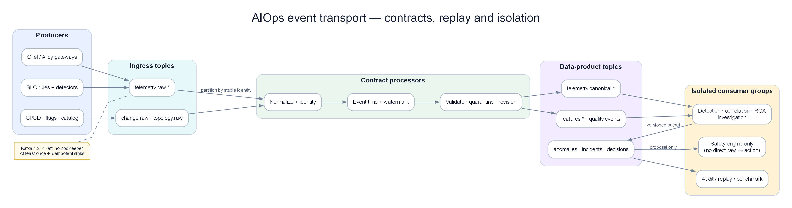

Chapter 07 — Incident event bus và deterministic replay với Kafka¶
Kafka không làm AIOps thông minh hơn; nó bảo đảm các stage có thể fail, restart, replay và fan-out mà vẫn giữ cùng sự thật logic. Chương này harden transport bằng duplicate, out-of-order, poison schema, hot partition, consumer lag, fault chồng và Kafka outage — rồi chứng minh incident output không đổi.
Prerequisites¶
- Hiểu biết cơ bản về hệ thống phân tán (CAP theorem, replication)
- 02 — OpenTelemetry — Kafka làm exporter trong OTel Collector
- 06 — Telemetry Data Plane — normalize / enrich / schema trước khi vào bus
- 08 — Topology & Change — context plane được đọc ngay sau transport
- 09 — Anomaly Detection — tiêu thụ dữ liệu từ Kafka
Related Documents¶
- 06 — Telemetry Data Plane — canonical events, retention, feature store
- 08 — Topology & Change — topology snapshot và change-event topics
- 09 — Anomaly Detection — tiêu thụ telemetry từ Kafka, publish anomaly events
- 10 — Alert Correlation — tiêu thụ các sự kiện bất thường từ Kafka
- 13 — Remediation — gửi các kích hoạt remediation tới Kafka
- 17 — Benchmark Replay — scenario transport, lag và cascade failure
Next Reading¶
Sau chương này, hãy chuyển sang 08 — Topology & Change, rồi mới sang 09 — Anomaly Detection. Topology/change là context contract của detection, correlation và RCA, không phải phụ lục đọc sau.
Cách đọc chương này¶
Đọc phần Production hardening trước để thấy duplicate, out-of-order, late event, poison schema, hot partition, rebalance và Kafka outage ảnh hưởng trực tiếp tới incident lifecycle thế nào. Các phần đánh số sau đó là implementation reference về Kafka/Kinesis, partitions, producers, consumers, Flink, HA, security và cost.
Production hardening — replay một incident qua bus¶
Bus phải giữ sự thật logic dù delivery không đẹp¶
Incident payment tạo canonical events; auth fault nổ chồng lúc 10:37. Bản ghi tới Kafka như sau:
| Arrival | Topic/partition/offset | Key | Event time | Nội dung |
|---|---|---|---|---|
| 10:10:45 | canonical/2/901 | payment-api|apac |
10:10:30 | DB pool residual tăng |
| 10:10:46 | canonical/2/902 | payment-api|apac |
10:10:42 | db.pool.acquire_timeout |
| 10:10:47 | canonical/2/903 | payment-api|apac |
10:10:39 | Failed span DB acquire |
| 10:10:49 | canonical/2/904 | payment-api|apac |
10:10:42 | Duplicate của offset 902 do resend |
| 10:12:10 | changes/4/188 | catalog|apac |
10:07:00 | Deploy catalog tới muộn |
| 10:22:00 | quality/1/771 | otel-gw|apac |
10:21:30 | Trace coverage tụt 88% → 49% |
| 10:37:03 | canonical/5/411 | auth-api|apac |
10:37:02 | Auth cache miss storm |
| 10:37:04 | canonical/0/1201 | gateway|apac |
10:37:03 | Shared gateway symptom |
| 10:40:00 | canonical/2/905 | payment-api|apac |
10:15:00 | Backfill event đến rất muộn |
Kafka chỉ bảo đảm order trong một partition theo append, không bảo đảm global event-time order. Offset 903 có event time trước 902. Change catalog ở topic/partition khác. Duplicate có offset mới. Consumer phải dùng event identity, event time/watermark và versioned state; không dùng offset làm causal clock.
Chọn key theo state cần giữ, không theo thói quen¶
Key quyết định ordering, locality và hot partition.
| Stage/topic | Key hợp lý | Lợi ích | Bẫy |
|---|---|---|---|
| Canonical telemetry | canonical service + region/scope | Per-service window/state local | Một mega-service có thể hot |
| Trace spans | trace ID | Spans cùng trace cùng partition | Large trace/hot trace |
| Change events | canonical service + environment | Thứ tự deploy/config per service | Global change cần relation riêng |
| Anomaly events | detector scope + signal/failure family | Lifecycle per detector entity | Key quá rộng trộn fault chồng |
| Incident commands/state | incident ID | Serialize lifecycle revisions | Membership candidate trước incident ID cần route khác |
| Audit/remediation | action/incident ID | Ordered approvals/actions | Không partition chỉ theo user/team |
Key environment=prod giữ “global order” bằng cách đẩy mọi event vào một partition và tạo bottleneck. Key random phân tải tốt nhưng stateful consumer phải cross-partition join phức tạp. Với mega-service, deterministic sub-key/shard giữ locality có kiểm soát; consumer aggregate bằng versioned window, không đổi key tùy hứng giữa replay.
Topic contract phải độc lập consumer implementation¶
Topic không chỉ có tên và retention. Contract cần:
- semantic purpose và owner;
- key/partitioning version;
- schema compatibility policy;
- event ID, event time, produced time, source/version;
- correction/retraction semantics;
- expected rate/size/cardinality;
- retention/replay horizon;
- PII/tenant ACL và encryption class;
- producer/consumer SLO;
- deprecation/dual-publish plan.
Không để Flink job là nơi duy nhất biết schema và key. Thay Flink bằng consumer service hoặc reprocess từ object store vẫn phải tạo cùng logical output.
At-least-once + idempotency thường thực tế hơn lời hứa exactly-once¶
Producer timeout sau khi broker đã commit có thể gửi lại. Consumer xử lý xong side effect rồi crash trước commit offset có thể xử lý lại. Kafka transaction không bao phủ tự động database, PagerDuty, Slack hay Kubernetes API.
Phân ba identity:
- transport record: topic/partition/offset;
- logical event: stable event ID qua resend/replay;
- business/action: incident revision hoặc remediation action ID.
Sink cần idempotency ở đúng lớp. Duplicate telemetry không tăng count; duplicate incident revision không page lại; duplicate remediation command không restart thêm pod. Dedup cache có TTL ngắn hơn replay horizon sẽ thất bại khi backfill; durable ledger hoặc deterministic upsert key cần cho side effect critical.
Không commit offset trước side effect/state bền vững. Cũng không giữ transaction mở hàng phút trong lúc gọi API ngoài. Pattern phổ biến là consume → validate/compute → atomic state/outbox → commit → dispatcher idempotent cho external action.
Rebalance/restart không được reset incident¶
Consumer group rebalance có thể dừng partition, chuyển ownership và replay một phần. Nếu detector/correlator chỉ giữ state RAM:
- rolling median/MAD reset và học anomaly thành normal;
- incident lifecycle quay về Candidate;
- explained-symptom lease mất;
- notification dedup mất và page lại.
State cần checkpoint/changelog/snapshot có version, gắn input offsets/watermarks. Restore phải hoàn tất trước khi partition xử lý record mới. Nếu state incompatible sau deploy, dual-run/migration hoặc replay có kiểm soát; không khởi động empty state giữa incident dài.
Acceptance: restart detector ở phút 28 của payment incident, hệ vẫn Firing cùng incident ID, baseline frozen đúng scope và silent gap bằng 0.
Out-of-order và late events cần revision policy¶
Ba thời gian khác nhau:
- event time từ source;
- broker append/produced time;
- processing time của consumer.
Event late trong allowed lateness cập nhật window trước khi finalize. Event tới sau nhưng trong correction horizon tạo revision. Event quá horizon có thể lưu audit/backfill nhưng không sửa page tự động nếu policy không cho phép.
Revision phải monotonic theo entity/window, ví dụ v3 thay v2; consumer bỏ revision cũ tới muộn. Không dùng Kafka offset toàn cục làm version vì records ở partition khác không so sánh được.
Deploy catalog tới muộn không được merge payment chỉ vì nó được process giữa incident. Correlation dùng event time, topology/service scope và negative evidence.
Poison record: cách retry vô hạn tự tạo outage¶
Một schema incompatible ở offset 500 làm consumer crash; platform restart; nó đọc lại offset 500 và crash mãi. Lag tăng, mọi service phía sau stale dù chỉ một record xấu.
Policy:
- Phân biệt transient dependency error với deterministic parse/schema error.
- Retry transient có budget/backoff; không giữ partition vô hạn.
- Poison record vào quarantine/DLQ với raw bytes, source offset, schema ID, reason, parser version và ACL.
- Commit/skip theo policy sau khi quarantine bền vững.
- Phát quality event và theo dõi affected scope.
- Tool replay DLQ phải giữ event ID và đánh dấu correction, không nhân logical count.
Fail-open không đồng nghĩa bỏ im lặng. Critical remediation/audit topic có thể fail closed; telemetry debug có thể quarantine và tiếp tục. Policy theo data class.
Lag là độ cũ của quyết định, không chỉ là số messages¶
Consumer lag 1 triệu records có thể là 2 giây ở 500k/s hoặc 17 phút ở 1k/s. AIOps cần:
- oldest unprocessed event age;
- event-time watermark lag;
- end-to-end feature/incident freshness;
- lag theo partition/scope;
- processing rate vs arrival rate;
- checkpoint/state restore age.
Nếu anomaly event 12 phút cũ mới tới correlation, incident onset vẫn theo event time nhưng page hiện tại phải ghi detection delay. Auto-remediation có freshness gate; không hành động trên incident snapshot stale dù score cao.
Lag có hai vai trò: platform incident nếu pipeline không theo kịp, và quality modifier cho production incident. Không suppress toàn bộ alert vì Kafka lag; bypass SLO alerting phải tiếp tục cảnh báo customer impact.
Hot partition trong fault storm¶
Payment là service lớn, fault làm volume log/anomaly tăng 20× đúng partition theo service key. Các service cùng partition bị chậm dù khỏe. Biện pháp:
- capacity/headroom và compression/batching trước incident;
- key version hỗ trợ deterministic sub-shard cho high-volume telemetry;
- isolate critical topics/tenants;
- backpressure/drop policy cho debug, không cho incident/audit;
- monitor skew giữa partitions, không chỉ total throughput;
- downstream re-aggregate sub-shards bằng window/revision idempotent.
Không đổi partition count/key giữa incident mà không hiểu ordering. Repartition làm cùng entity đi hai mapping trong transition; cần key version và dual-read boundary.
Multi-consumer isolation¶
Detector, correlation, RCA, training và audit dùng group riêng. Training backfill không được commit offset của realtime detector. Một consumer query/deserialize nặng không trực tiếp block group khác, nhưng vẫn cạnh tranh broker/network/disk; quota và workload isolation cần thiết.
Remediation commands/audit không nên chung topic retention/ACL với raw telemetry. PII scope và blast radius khác. Một LLM consumer không được đọc toàn bộ raw topic chỉ vì tiện.
Kafka outage: AIOps degraded nhưng direct safety signals phải sống¶
Nếu Kafka unavailable:
- Producers buffer có giới hạn và công bố oldest buffered age.
- Critical SLO alerts có đường trực tiếp/bypass tới on-call.
- Intelligence plane đánh dấu degraded/unknown, không resolved.
- Auto-remediation bị chặn nếu evidence/action audit không durable.
- Sau recovery, backfill theo event time không được tạo page storm lịch sử.
- Platform incident Kafka tách khỏi customer incident nhưng liên kết loss of visibility.
Không thiết kế bypass để chạy một AIOps engine thứ hai không state. Bypass tối thiểu bảo vệ customer-impact alert và human control; replay khôi phục intelligence sau đó.
Long incident và fault chồng qua bus¶
Payment kéo dài 54 phút. Retention/state/checkpoint phải dài hơn incident; compaction không xóa state đang cần. Tại 10:37 auth fault có key/service/failure family riêng, nên detector state và incident candidate không bị payment che.
Gateway symptom có key gateway và có thể được correlation liên kết tới hai incidents theo scope/time. Không ép mọi record trong cùng partition/window thuộc một incident. Partitioning hỗ trợ processing order, không quyết định causal membership.
Golden replay cho Chapter 07¶
Replay dataset inject:
- 10% producer duplicates.
- Event time đảo trong cùng partition.
- Deploy event ở topic khác tới muộn 5 phút.
- Poison schema giữa partition.
- Hot payment partition 20×.
- Consumer rebalance/restart phút 28.
- Kafka unavailable 6 phút rồi backfill.
- Auth fault nổ chồng phút 37.
Điều kiện đạt:
- Canonical/feature/anomaly logical counts không đổi vì duplicate.
- Payment incident giữ cùng ID/lifecycle, silent gap = 0 sau restart.
- Late deploy revision không page lại hoặc bị gán root vì processing time.
- Poison record không chặn records tốt phía sau; loss có quality event.
- Auth được phát hiện/tách riêng trong SLA dù payment partition nóng.
- Backfill sau outage không tạo notification storm.
- Replaying cùng topics/state versions tạo cùng incident membership/RCA input.
- External remediation/audit side effects là idempotent.
SLO của event bus theo consumer outcome¶
| SLO | Mục tiêu khởi đầu |
|---|---|
| Produce durability critical topics | Theo replication policy; unreported loss = 0 |
| Canonical event age P99 | < 60 giây |
| Anomaly → incident freshness P99 | < 30 giây bình thường |
| Duplicate logical side effects | 0 |
| Poison isolation time | < 60 giây |
| Restore/rebalance gap | Trong budget, không reset lifecycle |
| Replay logical equality | 100% golden incidents |
| Bypass customer-impact alert | Hoạt động độc lập Kafka |
Broker uptime 99,99% chưa chứng minh những SLO này. Cluster xanh nhưng consumer watermark chậm 15 phút vẫn là AIOps outage.
Output contract sang Chapter 08 và 09–11¶
Chapter 07 bảo toàn canonical events, topology/change events, quality và revisions qua durable topics. Chapter 08 định nghĩa context graph/change plane được version hóa. Sau đó Detector/Correlation/RCA tiêu thụ event-time, identity, quality và snapshot contract; không chỉ đọc một message payload rồi tin nó luôn mới/duy nhất.
1. Why Event Streaming for AIOps?¶

Raw topics → contract processors → versioned data-product topics → consumer groups cô lập; remediation chỉ nhận proposal đã định kiểu.
Ý TƯỞNG
Kafka không phải "hàng đợi tin nhắn" theo nghĩa cổ điển (RabbitMQ/SQS). Nó là distributed commit log — một journal có thể replay. Trong AIOps, điều này quan trọng hơn throughput: bạn cần phát lại 7 ngày telemetry để train lại mô hình anomaly detection, debug false positive, và audit trail. Nếu chỉ nghĩ Kafka = queue đẩy tin nhắn đi, bạn sẽ cấu hình sai retention, sai offset, và mất dữ liệu train.
Vì sao AIOps bắt buộc có transport layer?
Pipeline AIOps có 5–7 stage (collect → detect → correlate → RCA → LLM → remediate). Mỗi stage có latency và failure mode khác nhau. Gọi trực tiếp HTTP giữa các stage = một stage chậm kéo sập toàn pipeline. Event streaming khử ghép nối thời gian (temporal decoupling): producer xong việc ngay khi ghi log; consumer xử lý theo nhịp của riêng nó.
The Problem Without a Queue¶
Nếu không có lớp vận chuyển dữ liệu, pipeline AIOps sẽ bị đồng bộ và dễ gãy:
graph LR
AD[Anomaly Detector] -->|direct call| CORR[Correlation Engine]
CORR -->|direct call| RCA[RCA Engine]
RCA -->|direct call| LLM[LLM Agent]
LLM -->|direct call| REM[Remediation]
style AD fill:#dbeafe,color:#1e293bCác vấn đề:
- Nếu Correlation Engine bị chậm, Anomaly Detector sẽ bị chặn (block)
- Nếu LLM Agent bị crash, kết quả RCA sẽ bị mất
- Không thể phát lại (replay) các sự kiện phục vụ debug hoặc đào tạo lại mô hình ML
- Không thể thêm consumer mới (ví dụ: mô hình ML thứ hai) mà không sửa đổi producers
- Cơ chế backpressure lan truyền ngược lên upstream, có nguy cơ làm mất telemetry
Warning
Edge case: "Gọi trực tiếp + retry queue nhỏ trong process" trông đơn giản lúc POC, nhưng khi OTel Collector drop metrics vì AD không nhận kịp, bạn đã mất tín hiệu — và ML model sau đó train trên dữ liệu thiếu, sinh false negative. Transport layer bảo vệ chất lượng dữ liệu, không chỉ độ trễ.
What Kafka Solves¶
graph LR
AD[Anomaly Detector] -->|publish| K1[(Kafka\nanomalies topic)]
K1 -->|subscribe| CORR[Correlation Engine]
K1 -->|subscribe| STORE[Event Store\nfor replay]
K1 -->|subscribe| TRAIN[ML Training\npipeline]
CORR -->|publish| K2[(Kafka\ncorrelated-alerts topic)]
K2 -->|subscribe| RCA[RCA Engine]
K2 -->|subscribe| GRAFANA[Grafana\nannotations]
style K1 fill:#f3e8ff,color:#1e293b
style K2 fill:#f3e8ff,color:#1e293bLợi ích:
- Khử ghép nối (Decoupling): Producers không cần biết về consumers
- Độ bền vững (Durability): Tin nhắn được ghi bền vững trên đĩa, sống sót qua các sự cố của consumer
- Phát lại (Replay): Xử lý lại các sự kiện trong quá khứ phục vụ đào tạo lại mô hình, debug
- Fan-out: Nhiều consumers có thể cùng đọc từ một topic
- Backpressure: Consumer lag được hiển thị rõ ràng và có thể giám sát
- Đảm bảo thứ tự (Ordering): Đảm bảo thứ tự nghiêm ngặt trong phạm vi một partition
Important
Trade-off cốt lõi: Kafka thêm operational surface (brokers, disk, rebalance, schema). Đổi lại bạn có replay, fan-out, và isolation. Với AIOps production (multi-stage + ML training), trade-off này luôn đáng — trừ khi scale cực nhỏ (<1K events/s) và team <5 người (xem §13 Redis Streams).
2. Kafka Architecture Deep Dive¶
Ý TƯỞNG
Hãy nghĩ Kafka như một băng chuyền log có nhiều làn (partition). Mỗi làn có thứ tự riêng. Producer chọn làn bằng key. Consumer group chia các làn cho các worker. Không có "hàng đợi toàn cục" — chỉ có log append-only trên từng partition. Mọi bug production AIOps liên quan Kafka hầu hết đến từ hiểu sai mô hình này (ordering, rebalance, lag, hot partition).
graph TD
subgraph Producers["Producers"]
P1[OTel Collector\ntelemetry data]
P2[Anomaly Detector\nanomaly events]
P3[Alert Correlator\nalert groups]
end
subgraph Kafka["Kafka Cluster (3 brokers)"]
B1[Broker 1\nLeader for partitions: 0,3,6]
B2[Broker 2\nLeader for partitions: 1,4,7]
B3[Broker 3\nLeader for partitions: 2,5,8]
KRAFT[KRaft controller quorum\nmetadata log + elections]
end
subgraph Topics["Topics"]
T1[aiops-metrics\n9 partitions\nRF=3]
T2[aiops-anomalies\n6 partitions\nRF=3]
T3[aiops-alerts\n3 partitions\nRF=3]
end
subgraph Consumers["Consumer Groups"]
CG1[anomaly-detector-group\n3 consumer pods]
CG2[correlation-engine-group\n2 consumer pods]
CG3[llm-agent-group\n1 consumer pod]
CG4[event-store-group\n1 consumer pod]
end
P1 -->|produce| B1
P2 -->|produce| B2
P3 -->|produce| B3
B1 <-->|replicate| B2
B2 <-->|replicate| B3
B1 -->|serve| CG1
B2 -->|serve| CG2
B3 -->|serve| CG3
style Producers fill:#dbeafe,color:#1e293b
style Kafka fill:#dcfce7,color:#1e293b
style Topics fill:#f3e8ff,color:#1e293b
style Consumers fill:#ffedd5,color:#1e293bBroker Internals¶
Mỗi Kafka broker chịu trách nhiệm: 1. Phục vụ các lượt ghi của producer đối với các partitions mà nó làm leader 2. Replicate dữ liệu tới các follower brokers 3. Phục vụ các lượt đọc của consumer từ các partitions của nó 4. Quản lý log segment (các file trên đĩa)
Log segment: mỗi partition = thư mục chứa .log + .index + .timeindex. Segment mới khi đạt log.segment.bytes (default 1GB) hoặc log.roll.hours.
Tip
Vì sao quan tâm log segment? Retention/compaction theo segment, không theo message. Segment active không bị xóa — segment.bytes quá lớn + retention 7d có thể giữ data lâu hơn kỳ vọng → cost disk tăng âm thầm. AIOps throughput cao: ~1GB/segment là cân bằng tốt.
3. Topics and Partitions¶
Partition Key Concepts¶
graph LR
subgraph Topic["Topic: aiops-metrics"]
P0[Partition 0\nBroker 1 Leader\nOffset: 0,1,2...1M]
P1[Partition 1\nBroker 2 Leader\nOffset: 0,1,2...950K]
P2[Partition 2\nBroker 3 Leader\nOffset: 0,1,2...1.1M]
end
MSG1[Message\nkey=service-A] -->|hash key modulo 3 = 0| P0
MSG2[Message\nkey=service-B] -->|hash key modulo 3 = 1| P1
MSG3[Message\nkey=service-C] -->|hash key modulo 3 = 2| P2
CONS1[Consumer 1] -->|reads| P0
CONS2[Consumer 2] -->|reads| P1
CONS3[Consumer 3] -->|reads| P2
style P0 fill:#dbeafe,color:#1e293b
style P1 fill:#dcfce7,color:#1e293b
style P2 fill:#f3e8ff,color:#1e293bĐảm bảo thứ tự (Ordering guarantee): Kafka chỉ đảm bảo thứ tự trong phạm vi từng partition. Các tin nhắn có cùng key sẽ luôn đi vào cùng một partition → đảm bảo thứ tự cho từng key.
Tại sao việc này quan trọng với AIOps:
- Sử dụng
service_namelàm message key cho các sự kiện bất thường → tất cả các bất thường của cùng một dịch vụ sẽ được sắp xếp đúng thứ tự - Sử dụng
alert_group_idlàm key cho các sự kiện alert correlation → các cảnh báo tương quan được giữ đúng thứ tự - KHÔNG sử dụng random keys hoặc null keys nếu thứ tự tin nhắn là yếu tố quan trọng
Warning
Edge case — key thay đổi ý nghĩa: Nếu correlation engine cần thứ tự theo service_name nhưng producer key bằng trace_id, các anomaly của cùng service rơi vào nhiều partition → correlator thấy out-of-order events → false correlation hoặc miss cascade. Key design = correctness của 10 — Alert Correlation, không chỉ throughput.
Partition Count Design¶
Công thức tính số lượng partition:
Partitions = max(
desired_throughput / throughput_per_partition,
number_of_consumers_in_group
)
Ví dụ cho topic aiops-metrics:
- Throughput mục tiêu: 100MB/s
- Throughput trên mỗi partition: ~10MB/s (Kafka benchmark)
- Số lượng instance anomaly detector: 6
partitions = max(100/10, 6) = max(10, 6) = 10 partitions
Làm tròn lên lũy thừa tiếp theo của 2 hoặc sử dụng 12 (bội số của 3 để phân phối đều):
Kết quả: 12 partitions
Important
Trade-off partition count: Nhiều partition hơn = scale consumer tốt hơn, nhưng metadata lớn hơn, rebalance lâu hơn, open file handles tăng, và tăng partition phá vỡ key→partition mapping cho data in-flight. Bắt đầu conservative (6–12 cho AIOps topics), tăng khi lag ổn định cao và consumer đã scale max.
Cảnh báo: Số lượng partition không thể giảm sau khi tạo. Hãy bắt đầu một cách an toàn và tăng lên khi cần thiết. Tăng partition sẽ thay đổi ánh xạ key→partition và phá vỡ đảm bảo thứ tự đối với các dữ liệu đang truyền dẫn (in-flight data).
Retention Policy¶
# Thời gian lưu giữ (mặc định)
kafka-configs.sh --alter \
--topic aiops-metrics \
--add-config "retention.ms=604800000" # 7 ngày
# Kích thước lưu giữ (trên từng partition)
kafka-configs.sh --alter \
--topic aiops-raw-telemetry \
--add-config "retention.bytes=107374182400" # 100GB mỗi partition
# Compaction (cho các changelog/state topics)
kafka-configs.sh --alter \
--topic aiops-service-registry \
--add-config "cleanup.policy=compact"
Sự đánh đổi của các chính sách retention:
| Chính sách | Lợi ích | Chi phí |
|---|---|---|
| Ngắn (1-24h) | Chi phí lưu trữ thấp | Không thể phát lại dữ liệu lịch sử |
| Dài (7-30d) | Khả năng phát lại đầy đủ | Chi phí lưu trữ cao |
| Compacted | Lưu giữ không giới hạn (chỉ giữ giá trị mới nhất của mỗi key) | Không hỗ trợ truy vấn theo thời gian |
Khuyến nghị cho AIOps: 7 ngày retention cho các telemetry topics (khung thời gian phát lại để huấn luyện lại mô hình). 30 ngày cho các alert/incident topics (phục vụ phân tích sau sự cố).
Tip
Vì sao 7 ngày raw, 30 ngày anomalies? Raw telemetry volume lớn (metrics/logs/traces) — 7 ngày đủ để retrain feature window phổ biến (1–7 ngày) trong 09 — Anomaly Detection. Anomaly/alert volume nhỏ hơn ~100–1000× → giữ 30 ngày rẻ, phục vụ post-incident và audit. Incident topics: compact + long retention.
4. Producers — Configuration and Guarantees¶
Ý TƯỞNG
Producer config không phải "tuning performance" trước — mà là chọn failure mode bạn chấp nhận. acks=0 = chấp nhận mất event. acks=all + min.insync.replicas=2 = chấp nhận reject write khi cluster degraded. AIOps nên reject write hơn là mất anomaly im lặng — mất anomaly = blind spot; reject = producer buffer/retry/alert rõ ràng.
Delivery Semantics¶
| Cấu hình | Đảm bảo | Hành vi |
|---|---|---|
acks=0 |
Gửi và quên (Fire-and-forget) | Producer không chờ ack. Nhanh nhất. Có thể mất tin nhắn. |
acks=1 |
Xác nhận từ Leader (Leader ack) | Leader ghi vào log, gửi ack. Follower chưa kịp replicate. Rủi ro: Leader crash trước khi replication hoàn tất. |
acks=-1 (all) |
Replication đầy đủ | Tất cả in-sync replicas phải ack. Chậm nhất. Không mất dữ liệu nếu min.insync.replicas=2. |
Đối với AIOps (sự kiện quan trọng): Luôn sử dụng acks=-1.
Exactly-Once Semantics (EOS)¶
Vấn đề: Việc thử lại của Producer có thể gây trùng lặp tin nhắn: 1. Producer gửi tin nhắn 2. Broker ghi tin nhắn, gửi ack 3. Mạng lỗi — Producer không nhận được ack 4. Producer thử lại → tin nhắn bị trùng lặp
Giải pháp: Idempotent producer + transactions
# Cấu hình Producer cho EOS
producer_config = {
"bootstrap.servers": "kafka-1:9092,kafka-2:9092,kafka-3:9092",
# Idempotent producer: cho phép khử trùng lặp khi retry
"enable.idempotence": True,
# Bắt buộc cho cấu hình idempotent:
"acks": "all",
"retries": 2147483647, # Số lần thử lại tối đa
"max.in.flight.requests.per.connection": 5, # Phải ≤5 đối với idempotent
# Transactional ID (để đạt exactly-once với mô hình consume-produce)
"transactional.id": "aiops-anomaly-detector-0", # Duy nhất cho mỗi instance producer
# Tinh chỉnh hiệu năng
"batch.size": 65536, # Lô 64KB
"linger.ms": 10, # Chờ tối đa 10ms để gom đủ lô
"compression.type": "snappy", # Nén các lô
"buffer.memory": 33554432, # Bộ đệm producer 32MB
}
from confluent_kafka import Producer
producer = Producer(producer_config)
# Khởi tạo transaction
producer.init_transactions()
producer.begin_transaction()
try:
# Gửi tin nhắn trong transaction
producer.produce(
topic="aiops-anomalies",
key=b"service-order",
value=json.dumps(anomaly_event).encode(),
headers={"content-type": b"application/json"},
)
producer.commit_transaction()
except Exception as e:
producer.abort_transaction()
raise
Warning
Myth sắp vỡ: Kafka EOS không biến toàn bộ pipeline AIOps thành exactly-once end-to-end. EOS chỉ cover Kafka read → process → Kafka write trong transactional boundary. Side effects (gọi Prometheus API, ghi Redis, gọi LLM, PagerDuty) vẫn at-least-once. Xem §21 Exactly-Once Myths.
Producer Compression¶
| Codec | Tỷ lệ nén | Chi phí CPU | Tốt nhất cho |
|---|---|---|---|
| None | 1:1 | Không tốn CPU | Tin nhắn rất nhỏ |
| gzip | 4:1 | Cao | Producers dư thừa CPU, yêu cầu nén cao |
| snappy | 2:1 | Thấp | Mặc định cho production |
| lz4 | 2:1 | Rất thấp | Yêu cầu độ trễ cực thấp |
| zstd | 4:1 | Trung bình | Cân bằng tốt nhất giữa tỷ lệ/tốc độ |
Khuyến nghị: Sử dụng zstd cho các telemetry topics của AIOps (tỷ lệ nén cao, CPU trung bình). Sử dụng snappy cho các alert events (độ trễ là yếu tố quan trọng hơn tỷ lệ nén).
Tip
Vì sao compression quan trọng với cost model? Disk retention = raw_bytes × compression_ratio × RF. Chuyển snappy→zstd trên telemetry có thể giảm 30–50% storage → retention 7 ngày rẻ hơn rõ rệt (xem §19 Cost Model).
5. Consumers and Consumer Groups¶
Ý TƯỞNG
Consumer group = một logical subscriber. Cùng group.id = chia partitions (compete). Khác group.id = mỗi group nhận full copy (fan-out). Đây là nền tảng multi-consumer AIOps: AD, correlation, audit, training không share group — chúng là các group độc lập trên cùng topic.
Consumer Group Mechanics¶
sequenceDiagram
participant C1 as Consumer 1 (pod)
participant C2 as Consumer 2 (pod)
participant C3 as Consumer 3 (pod)
participant GC as Group Coordinator (Broker)
participant P0 as Partition 0
participant P1 as Partition 1
participant P2 as Partition 2
C1->>GC: JoinGroup(group_id="anomaly-detector")
C2->>GC: JoinGroup(group_id="anomaly-detector")
C3->>GC: JoinGroup(group_id="anomaly-detector")
GC->>C1: Gán partition 0 (được bầu làm leader)
GC->>C2: Gán partition 1
GC->>C3: Gán partition 2
loop Mỗi khoảng max.poll.interval.ms
C1->>P0: Fetch records (max.poll.records=500)
C2->>P1: Fetch records
C3->>P2: Fetch records
C1->>GC: Commit offset 1234
C2->>GC: Commit offset 5678
end
Note over C2: Pod bị crash
C2->>GC: LeaveGroup (hoặc timeout sau session.timeout.ms)
GC->>C1: Rebalance: nhận thêm partition 1
GC->>C3: Giữ nguyên partition 2Consumer Configuration¶
consumer_config = {
"bootstrap.servers": "kafka-1:9092,kafka-2:9092,kafka-3:9092",
"group.id": "anomaly-detector-group",
# Bắt đầu đọc từ vị trí mới nhất nếu chưa có committed offset
"auto.offset.reset": "latest", # hoặc "earliest" để phát lại dữ liệu
# Tắt tính năng tự động commit! Tiến hành commit thủ công sau khi xử lý xong
"enable.auto.commit": False,
# Tần suất gửi heartbeat tới broker
"heartbeat.interval.ms": 3000,
# Thời gian tối đa giữa các cuộc gọi poll() trước khi consumer bị coi là chết
# Phải lớn hơn thời gian xử lý một lô records
"max.poll.interval.ms": 300000, # 5 phút
# Số lượng records tối đa trả về trong mỗi lần gọi poll()
"max.poll.records": 500,
# Lượng dữ liệu tối thiểu cần nhận (chờ cho đến khi đủ lượng dữ liệu này trước khi trả về)
"fetch.min.bytes": 1024,
# Thời gian chờ tối đa nếu fetch.min.bytes chưa được thỏa mãn
"fetch.max.wait.ms": 500,
# Bảo mật
"security.protocol": "SASL_SSL",
"sasl.mechanism": "SCRAM-SHA-512",
"sasl.username": "aiops-consumer",
"sasl.password": "${KAFKA_PASSWORD}",
"ssl.ca.location": "/certs/kafka-ca.crt",
}
from confluent_kafka import Consumer, KafkaError
import json
consumer = Consumer(consumer_config)
consumer.subscribe(["aiops-metrics"])
try:
while True:
msgs = consumer.poll(timeout=1.0) # Chờ tin nhắn tối đa 1s
if msgs is None:
continue
if msgs.error():
if msgs.error().code() == KafkaError._PARTITION_EOF:
continue # Đã đọc đến cuối partition
raise KafkaError(msgs.error())
# Xử lý tin nhắn
try:
event = json.loads(msgs.value())
process_anomaly(event)
# Commit thủ công SAU KHI xử lý xong (at-least-once)
consumer.commit(asynchronous=False)
except Exception as e:
# Gửi tới DLQ nếu xử lý thất bại
send_to_dlq(msgs, str(e))
consumer.commit(asynchronous=False) # Vẫn commit để tiếp tục xử lý các tin nhắn tiếp theo
finally:
consumer.close()
Important
Vì sao enable.auto.commit=False? Auto-commit commit theo timer, không theo "đã xử lý xong". Consumer crash giữa process và commit → reprocess (OK, nếu idempotent). Crash sau auto-commit nhưng trước process xong → mất event (at-most-once). AIOps không chấp nhận mất anomaly. Manual commit sau process = at-least-once.
Tip
Edge case max.poll.interval.ms: Nếu batch ML inference (Isolation Forest trên 500 metrics) mất > max.poll.interval.ms, consumer bị kick khỏi group → rebalance storm → lag tăng → worse. Giảm max.poll.records hoặc tăng interval; tốt hơn: tách fetch thread khỏi process thread.
Consumer Lag — Chỉ số sức khỏe cốt lõi¶
Consumer Lag = Latest Offset - Committed Consumer Offset
Lag cao (>10K tin nhắn) cảnh báo:
- Consumer đang bị chậm → tốc độ xử lý quá chậm
- Đây là dấu hiệu cảnh báo sớm nhất về điểm nghẽn trong pipeline AIOps
Note
Lag không luôn là incident. Lag theo chu kỳ deploy, lag ban đêm khi retrain job chạy, lag ngắn sau rebalance — có thể là signal bình thường. Lag tăng tuyến tính không bound, lag trên critical path (anomalies → correlation) — là incident. Chi tiết: §20 Mental Model.
6. Offset Management¶
Ý TƯỞNG
Offset là bookmark đọc, không phải "đã xử lý thành công ở mọi side-effect". Commit offset chỉ nói: "tôi sẽ không đọc lại message này (trừ seek)". Side effects (DB, LLM, ticket) phải tự idempotent. Đây là lý do AIOps consumer luôn thiết kế at-least-once + idempotent keys (event_id).
Offset Commit Strategies¶
| Chiến lược | Triển khai | Rủi ro | Trường hợp sử dụng |
|---|---|---|---|
| Auto-commit | enable.auto.commit=True |
Có thể commit trước khi xử lý xong → at-most-once | Consumers đơn giản, chuyển tiếp log |
| Manual sync commit | commit(async=False) |
Chậm nhất, chặn xử lý cho đến khi nhận được ack | Khuyến nghị cho AIOps (quan trọng) |
| Manual async commit | commit(async=True) |
Rủi ro nhỏ (commit thất bại ngầm) | Xử lý idempotent, throughput cao |
| Transactional | Producer + Consumer trong cùng transaction | Phức tạp | Stream processing dạng exactly-once |
Seek and Replay¶
# Phát lại từ đầu (để huấn luyện lại mô hình)
from confluent_kafka import TopicPartition
partitions = consumer.assignment()
consumer.seek_to_beginning(partitions)
# Phát lại từ mốc thời gian cụ thể (phân tích sau sự cố: phát lại 2 giờ gần nhất)
import time
ts = int((time.time() - 7200) * 1000) # 2 giờ trước tính bằng mili-giây
for partition in partitions:
offsets = consumer.offsets_for_times(
[TopicPartition(partition.topic, partition.partition, ts)]
)
consumer.seek(offsets[0])
Tip
Vì sao replay là superpower AIOps? Sau incident, bạn seek lại 2 giờ trước trên aiops-anomalies với consumer group postmortem-replay-YYYYMMDD (group mới → không đụng offset production). Train lại model, verify correlator, debug false positive — không cần dump S3 trước nếu retention còn data. Đây là lý do retention 7–30 ngày không phải "lãng phí disk".
Warning
Edge case: auto.offset.reset=latest trên consumer group mới sẽ bỏ qua backlog. Group mới cho blue-green deploy nếu reset=latest → mất anomalies trong cửa sổ deploy. Production AIOps: group mới dùng earliest hoặc seek explicit tới timestamp deploy-minus-buffer.
7. Replication and Durability¶
Ý TƯỞNG
Replication trong Kafka là anti-data-loss, không phải load balancing đọc (consumer đọc từ leader theo mặc định). RF=3 + min.ISR=2 + unclean.leader.election=false = bạn chọn consistency over availability khi cluster bị tổn thương. Đúng cho alert/incident; có thể nới lỏng cho debug topics.
Replication Factor¶
Replication Factor (RF) = số lượng bản sao của mỗi partition được lưu trữ
RF=1: Không dự phòng. Broker hỏng = mất dữ liệu.
RF=2: Sống sót qua 1 broker hỏng. Nhưng có nguy cơ split-brain.
RF=3: Sống sót qua 1 broker hỏng. Khuyến nghị cho production.
RF=5: Sống sót qua 2 brokers hỏng. Chi phí rất cao.
Khuyến nghị cho AIOps: Thiết lập RF=3 cho tất cả các topics.
Min In-Sync Replicas (min.insync.replicas)¶
Cấu hình Producer acks=all + min.insync.replicas=2
Ý nghĩa:
- Leader + ít nhất 1 follower phải xác nhận lượt ghi
- Nếu chỉ có 1 broker hoạt động (leader), các lượt ghi sẽ lỗi với NotEnoughReplicas
- Ngăn ngừa mất dữ liệu bằng cách chấp nhận đánh đổi tính sẵn sàng (availability)
# Tạo topic với các cấu hình đảm bảo độ bền vững trong production
kafka-topics.sh --create \
--topic aiops-anomalies \
--partitions 6 \
--replication-factor 3 \
--config min.insync.replicas=2 \
--config unclean.leader.election.enable=false \
--config retention.ms=604800000
Unclean Leader Election¶
unclean.leader.election.enable=false (rất quan trọng đối với AIOps):
Nếu tất cả các in-sync replicas đều hỏng, Kafka phải lựa chọn:
- true: Bầu một out-of-sync replica làm leader → ưu tiên tính sẵn sàng, nhưng chịu rủi ro mất dữ liệu
- false: Chờ một in-sync replica hoạt động trở lại → ưu tiên tính nhất quán (consistency), nhưng chấp nhận gián đoạn dịch vụ tạm thời
Đối với dữ liệu alert/incident của AIOps: luôn sử dụng false. Việc mất mát dữ liệu trong pipeline AIOps mang lại hậu quả tệ hơn so với việc gián đoạn dịch vụ tạm thời.
Important
Trade-off availability: Khi unclean.leader.election=false và ISR co về 0, topic ngừng serve partition đó. AIOps "mù" tạm thời trên partition đó — nhưng không tự chữa bằng dữ liệu sai. Kết hợp với §25 Bypass design: Alertmanager → PagerDuty vẫn sống khi Kafka chết.
8. Kafka Topic Design for AIOps¶
Ý TƯỞNG
Topic topology phản ánh pipeline stages, không phản ánh "mọi thứ có thể stream". Mỗi hop topic = boundary contract (schema + SLA latency + retention + owners). Quá nhiều topic = operational chaos. Quá ít topic = blast radius lớn khi schema/lag/poison message xảy ra.
Topic Topology¶
graph TD
subgraph Raw["Raw Telemetry"]
T1[aiops-raw-metrics\n12 partitions, 7d retention]
T2[aiops-raw-logs\n12 partitions, 7d retention]
T3[aiops-raw-traces\n12 partitions, 7d retention]
end
subgraph Processed["Processed Events"]
T4[aiops-anomalies\n6 partitions, 30d retention]
T5[aiops-correlated-alerts\n3 partitions, 30d retention]
T6[aiops-rca-results\n3 partitions, 30d retention]
end
subgraph Action["Action Events"]
T7[aiops-remediation-triggers\n3 partitions, 90d retention]
T8[aiops-remediation-results\n3 partitions, 90d retention]
T9[aiops-incidents\n3 partitions, 1y retention, compacted]
end
subgraph DLQ["Dead Letter Queues"]
DLQ1[aiops-anomalies-dlq\n3 partitions, 7d]
DLQ2[aiops-remediation-dlq\n3 partitions, 7d]
end
T1 -->|anomaly detector| T4
T2 -->|log anomaly detector| T4
T3 -->|trace anomaly detector| T4
T4 -->|correlation engine| T5
T5 -->|RCA engine| T6
T6 -->|LLM agent| T7
T7 -->|remediation executor| T8
T7 -->|on failure| DLQ2
style Raw fill:#dbeafe,color:#1e293b
style Processed fill:#dcfce7,color:#1e293b
style Action fill:#ffedd5,color:#1e293b
style DLQ fill:#fecaca,color:#1e293bTopic Naming Convention¶
<domain>-<data-type>-<qualifier>
Ví dụ:
aiops-raw-metrics # Telemetry thô: metrics
aiops-raw-logs # Telemetry thô: logs
aiops-anomalies # Đã xử lý: anomaly events
aiops-anomalies-dlq # Dead letter: xử lý anomaly thất bại
aiops-correlated-alerts # Đã xử lý: các nhóm cảnh báo tương quan
aiops-rca-results # Đã xử lý: kết quả phân tích nguyên nhân gốc rễ
aiops-remediation-triggers # Actions: lệnh kích hoạt remediation
aiops-remediation-results # Actions: kết quả thực hiện remediation
aiops-incidents # State: incident registry (compacted)
Tip
Vì sao tách raw vs processed? Retention/cost khác nhau; ACL khác nhau (raw = collector write; processed = AD write); poison message ở raw không nên block remediation topic. Blast radius isolation > "tiện một topic cho tất cả".
9. Message Schema and Serialization¶
Ý TƯỞNG
Schema là API contract giữa teams (platform telemetry, AD, correlation, remediation). Breaking schema = silent failure hoặc poison message hàng loạt → model train hỏng, correlator crash loop. Schema Registry không phải "nice to have" — là safety rail cho multi-service AIOps.
Schema Registry¶
Sử dụng Confluent Schema Registry để bắt buộc áp dụng message schemas:
# Triển khai Schema Registry
apiVersion: apps/v1
kind: Deployment
metadata:
name: schema-registry
namespace: kafka
spec:
replicas: 2
template:
spec:
containers:
- name: schema-registry
image: confluentinc/cp-schema-registry:7.5.0
env:
- name: SCHEMA_REGISTRY_KAFKASTORE_BOOTSTRAP_SERVERS
value: "kafka-1:9092,kafka-2:9092,kafka-3:9092"
- name: SCHEMA_REGISTRY_HOST_NAME
value: schema-registry
- name: SCHEMA_REGISTRY_LISTENERS
value: http://0.0.0.0:8081
Anomaly Event Schema (Avro)¶
{
"type": "record",
"name": "AnomalyEvent",
"namespace": "com.aiops.events",
"fields": [
{"name": "event_id", "type": "string", "doc": "UUID v4"},
{"name": "timestamp", "type": "long", "logicalType": "timestamp-millis"},
{"name": "service_name", "type": "string"},
{"name": "service_namespace", "type": "string"},
{"name": "cluster", "type": "string"},
{"name": "signal_type", "type": {"type": "enum", "name": "SignalType",
"symbols": ["METRIC", "LOG", "TRACE"]}},
{"name": "metric_name", "type": ["null", "string"], "default": null},
{"name": "anomaly_score", "type": "double", "doc": "0.0-1.0, higher=more anomalous"},
{"name": "anomaly_type", "type": "string", "doc": "spike|drop|seasonal|pattern"},
{"name": "algorithm", "type": "string", "doc": "ewma|zscore|isolation_forest|lstm"},
{"name": "baseline_value", "type": ["null", "double"], "default": null},
{"name": "current_value", "type": ["null", "double"], "default": null},
{"name": "deviation_pct", "type": ["null", "double"], "default": null},
{"name": "confidence", "type": "double", "doc": "0.0-1.0 model confidence"},
{"name": "context", "type": {
"type": "map",
"values": "string"
}, "doc": "Các thuộc tính bổ sung dạng key-value"},
{"name": "related_trace_ids", "type": {"type": "array", "items": "string"}, "default": []},
{"name": "raw_data_ref", "type": ["null", "string"], "default": null,
"doc": "Tham chiếu tới dữ liệu thô trong object storage"}
]
}
Serialization Options¶
| Định dạng | Tiến hóa Schema | Kích thước | Tốc độ | Trường hợp sử dụng |
|---|---|---|---|---|
| Avro + Schema Registry | ✅ Xuất sắc (tương thích ngược/xuôi) | Nhỏ (dạng nhị phân) | Nhanh | Môi trường AIOps Production (khuyến nghị) |
| Protobuf | ✅ Xuất sắc | Nhỏ nhất | Nhanh nhất | Throughput lớn, schema nghiêm ngặt |
| JSON | ❌ Không hỗ trợ (dễ gây breaking changes) | Lớn nhất | Chậm nhất | Môi trường phát triển, debug |
| Parquet | Không áp dụng (định dạng file, không dùng cho stream) | Nhỏ nhất | — | Xử lý theo lô (batch/offline) |
Warning
Schema evolution phá training: Thêm field bắt buộc không default; đổi type anomaly_score float→string; rename service_name→service — consumer cũ fail, DLQ đầy, hoặc worse: silent coerce sai giá trị → training set nhiễm dirty labels. Luôn BACKWARD compatibility + default values. Chi tiết §22.
10. Dead Letter Queue Pattern¶
Ý TƯỞNG
DLQ là van an toàn: poison message không được phép chặn partition forever (head-of-line blocking). Commit + gửi DLQ = tiến tiếp; không commit + retry vô hạn trên bad message = lag tăng vô hạn trên một partition. AIOps cần cả hai: DLQ cho bad data, và alert khi DLQ rate tăng (signal schema bug / dependency down).
Khi một tin nhắn không thể xử lý (lỗi parse, lỗi hệ thống downstream, lỗi timeout), nó phải được đưa vào hàng đợi lỗi chứ không được bỏ qua một cách im lặng.
graph LR
KAFKA[Kafka Topic\naiops-anomalies] --> CONS[Consumer\nAnomaly Processor]
CONS -->|thành công| NEXT[Next Topic\naiops-correlated-alerts]
CONS -->|thất bại| DLQ[Dead Letter Queue\naiops-anomalies-dlq]
DLQ -->|kiểm tra thủ công| OPS[Operations Team]
DLQ -->|logic thử lại| RETRY[DLQ Processor\nretry với backoff]
RETRY -->|xử lý lại| CONS
style DLQ fill:#fecaca,color:#1e293bdef process_with_dlq(consumer, producer, dlq_topic):
msg = consumer.poll(1.0)
if msg is None:
return
try:
event = AnomalyEvent.from_bytes(msg.value())
process_anomaly(event)
consumer.commit(asynchronous=False)
except (ValueError, KeyError) as e:
# Lỗi parse/schema — gửi ngay tới DLQ (không thử lại)
send_to_dlq(
producer=producer,
dlq_topic=dlq_topic,
original_msg=msg,
error=str(e),
error_type="PARSE_ERROR",
retry_count=0,
)
consumer.commit(asynchronous=False)
except TemporaryError as e:
# Lỗi tạm thời — kiểm tra số lần thử lại
retry_count = int(msg.headers().get("retry_count", [b"0"])[1])
if retry_count >= 3:
# Vượt quá số lần thử lại → gửi tới DLQ
send_to_dlq(producer, dlq_topic, msg, str(e), "MAX_RETRIES", retry_count)
consumer.commit(asynchronous=False)
else:
# Gửi lại vào topic với số lần thử lại tăng lên và cấu hình delay backoff
time.sleep(2 ** retry_count) # Exponential backoff: 1s, 2s, 4s
producer.produce(
topic=msg.topic(),
key=msg.key(),
value=msg.value(),
headers=[
("retry_count", str(retry_count + 1).encode()),
("original_timestamp", msg.timestamp()[1].to_bytes(8, 'big')),
("error_message", str(e).encode()[:1024]),
],
)
consumer.commit(asynchronous=False)
def send_to_dlq(producer, dlq_topic, original_msg, error, error_type, retry_count):
dlq_payload = {
"original_topic": original_msg.topic(),
"original_partition": original_msg.partition(),
"original_offset": original_msg.offset(),
"original_key": original_msg.key().decode() if original_msg.key() else None,
"original_value_b64": base64.b64encode(original_msg.value()).decode(),
"error_message": error,
"error_type": error_type,
"retry_count": retry_count,
"failed_at": datetime.utcnow().isoformat(),
}
producer.produce(
topic=dlq_topic,
value=json.dumps(dlq_payload).encode(),
)
producer.flush()
Important
Phân loại lỗi trước khi DLQ: PARSE_ERROR / schema → DLQ ngay, không retry. TemporaryError (timeout Redis, 503 downstream) → retry có bound. Business validation (score NaN) → DLQ + metric. Gom tất cả exception vào một except Exception = nuốt bug và làm bẩn DLQ, che mất root cause.
11. AWS MSK — Managed Kafka¶
Ý TƯỞNG
MSK mua operational time, không mua "Kafka tốt hơn". Broker still Kafka. Bạn vẫn phải thiết kế topic, schema, lag alert, ACL. Những gì AWS gánh: patching OS, broker replace, multi-AZ wiring, storage attach. Với team AIOps nhỏ, đây thường là đúng trade-off.
Amazon MSK (Managed Streaming for Apache Kafka) giúp giảm tải gánh nặng vận hành Kafka.
MSK vs Self-Hosted Kafka¶
| Chiều | AWS MSK | Self-Hosted |
|---|---|---|
| Setup / ops | 30 phút; AWS patch broker/OS | 2–5 ngày setup; ops cao |
| Version / KRaft | Catalog AWS; Serverless KRaft | Pin tùy ý; KRaft 3.4+ |
| Multi-AZ / VPC | Tự động + native VPC | Tự thiết kế |
| Monitoring | CloudWatch + JMX/Prometheus | Full Prometheus tự build |
| Cost (3-broker mid) | ~$400–750/tháng | EC2 rẻ hơn + eng hours |
| Connect / Serverless | MSK Connect; Serverless ✅ | Tự quản lý; Serverless ❌ |
Khuyến nghị: team nhỏ/vừa → MSK; team lớn + Kafka experts → self-hosted; burst load → MSK Serverless.
Tip
Ngành regulated (finance/healthcare/gov): xem thêm §26 MSK vs Self-Managed for Regulated Industries — quyết định không chỉ TCO mà còn audit, data residency, change control.
MSK Terraform¶
resource "aws_msk_cluster" "aiops" {
cluster_name = "aiops-kafka-prod"
kafka_version = "3.5.1"
number_of_broker_nodes = 3 # 1 broker trên mỗi AZ tại us-east-1
broker_node_group_info {
instance_type = "kafka.m5.large" # 2 vCPU, 8GB RAM
client_subnets = [
aws_subnet.private_us_east_1a.id,
aws_subnet.private_us_east_1b.id,
aws_subnet.private_us_east_1c.id,
]
storage_info {
ebs_storage_info {
volume_size = 1000 # 1TB mỗi broker
provisioned_throughput {
enabled = true
volume_throughput = 250 # MB/s
}
}
}
security_groups = [aws_security_group.kafka.id]
}
encryption_info {
encryption_in_transit {
client_broker = "TLS" # Bắt buộc dùng TLS
in_cluster = true
}
encryption_at_rest {
data_volume_kms_key_id = aws_kms_key.kafka.arn
}
}
client_authentication {
sasl {
scram = true # SASL/SCRAM kết hợp AWS Secrets Manager
iam = true # Xác thực IAM (tích hợp sẵn của MSK)
}
}
configuration_info {
arn = aws_msk_configuration.aiops.arn
revision = aws_msk_configuration.aiops.latest_revision
}
enhanced_monitoring = "PER_TOPIC_PER_PARTITION" # Metrics CloudWatch chi tiết
open_monitoring {
prometheus {
jmx_exporter {
enabled_in_broker = true # Xuất các JMX metrics phục vụ Prometheus
}
}
}
logging_config {
broker_logs {
cloudwatch_logs {
enabled = true
log_group = aws_cloudwatch_log_group.msk_broker.name
}
s3 {
enabled = true
bucket = aws_s3_bucket.msk_logs.id
prefix = "kafka-broker-logs/"
}
}
}
tags = {
Environment = "production"
Component = "aiops-transport"
}
}
resource "aws_msk_configuration" "aiops" {
kafka_versions = ["3.5.1"]
name = "aiops-kafka-config"
server_properties = <<-EOF
auto.create.topics.enable=false
default.replication.factor=3
min.insync.replicas=2
num.partitions=12
num.network.threads=8
num.io.threads=16
socket.send.buffer.bytes=102400
socket.receive.buffer.bytes=102400
socket.request.max.bytes=104857600
log.retention.hours=168
log.segment.bytes=1073741824
log.retention.check.interval.ms=300000
unclean.leader.election.enable=false
replica.lag.time.max.ms=30000
offsets.retention.minutes=10080
transaction.state.log.replication.factor=3
transaction.state.log.min.isr=2
EOF
}
Warning
auto.create.topics.enable=false là bắt buộc production. Topic tạo ngẫu nhiên với default partitions/RF/retention = bomb cost + bomb correctness. Mọi AIOps topic phải được Terraform/GitOps provision với RF, ISR, retention tường minh.
12. Kafka vs Kinesis¶
| Chiều | Apache Kafka (MSK) | AWS Kinesis |
|---|---|---|
| Throughput / unit | ~10MB/s per partition | 1MB/s write, 2MB/s read per shard |
| Retention / replay | Cấu hình linh hoạt; offset replay | 1–365 ngày; timestamp replay |
| Consumer fan-out | Consumer groups đầy đủ | Enhanced Fan-Out |
| Ordering | Per partition | Per shard |
| Message size | 1MB default (tăng được) | 1MB hard limit |
| Exactly-once | Transactions ✅ | At-least-once |
| Ecosystem | Connect, Streams, Flink | Lambda, Firehose, S3-native |
| Cost nhỏ | Cao hơn (fixed brokers) | Rẻ hơn rõ ở scale nhỏ |
Ma trận quyết định:
Đang sử dụng AWS Lambda rất nhiều? → Kinesis (kích hoạt trigger tự nhiên)
Yêu cầu exactly-once semantics? → Kafka
Kích thước tin nhắn >1MB? → Kafka
Thời gian retention dài (>365 ngày)?→ Kafka
Đội ngũ nhỏ, chỉ chạy trên AWS? → Kinesis (đơn giản hơn)
Cần hệ sinh thái đa dạng (Flink...)?→ Kafka
Chi phí là yếu tố hàng đầu (<100MB/s)?→ Kinesis rẻ hơn ở quy mô nhỏ
Chi phí ở quy mô lớn (>1GB/s)? → Kafka rẻ hơn (MSK có chi phí cố định tối ưu hơn)
Tip
Cho AIOps hybrid: Nhiều team dùng Kinesis cho raw ingestion edge/Lambda, sink sang S3, và Kafka/MSK cho control plane events (anomalies, correlated alerts, remediation) nơi multi-consumer + ordering + schema quan trọng hơn. Không bắt buộc one-size-fits-all.
13. Kafka vs Redis Streams¶
Redis Streams là giải pháp thay thế gọn nhẹ hơn cho các hệ thống AIOps quy mô nhỏ.
| Chiều | Kafka | Redis Streams |
|---|---|---|
| Throughput / durability | Triệu msg/s; disk-durable | 100–500K/s; memory (+AOF/RDB) |
| Retention / replay | Ngày→năm; offset đầy đủ | Giới hạn RAM; replay hạn chế |
| Partitioning | First-class | Không native multi-partition |
| Ops / cost / ecosystem | Cao / cao / rất lớn | Thấp / thấp / nhỏ |
Khuyến nghị:
- Quy mô <10K events/giây VÀ đội ngũ <10 kỹ sư: Redis Streams (đơn giản hơn)
- Quy mô >10K events/giây HOẶC yêu cầu khả năng phát lại/xử lý lại dữ liệu: Kafka/MSK
- Hệ thống AIOps Production quy mô vừa và lớn: Kafka/MSK (đảm bảo hệ sinh thái, độ bền dữ liệu)
Warning
Redis Streams + AOF vẫn không thay Kafka cho 7-day full replay training. Memory cost scale linear với retention. Dùng Redis Streams cho internal command bus ngắn hạn; đừng train Isolation Forest từ Redis stream 30 ngày.
14. Xử lý trên Kafka — Flink, Kafka Streams và consumer service¶
Ý TƯỞNG
Kafka lưu và fan-out event. Xử lý (map nặng, join topology, window feature, sessionization) nằm ở consumer của log. Trong industry, Kafka + Apache Flink là cặp nặng phổ biến nhất — connector Kafka, event-time, state có checkpoint khớp data plane AIOps nhiều stage. Điều đó không có nghĩa mọi AIOps ngày đầu phải chạy Flink.
14.1 Vì sao “Kafka đi với Flink” thường đúng (ở scale)¶
| Thực tế | Hệ quả |
|---|---|
| Flink coi Kafka là source of truth durable, replay được | Recompute feature / sửa enrich xấu từ offset + savepoint |
| AIOps cần event-time (scrape delay, export trễ, lag region) | Watermark > window now() ngây thơ trong vòng Python |
| Join enrich là stateful (service → owner, deploy version) | RocksDB state hơn map Redis ad-hoc không recovery |
| Nhiều sink (canonical topic, online feature, lake) | Một job graph Flink fan-out với thời điểm xử lý nhất quán |
Managed Flink (Amazon Managed Service for Apache Flink, Confluent, Ververica, …) giảm ops — mental model giữ nguyên: log trên Kafka, state + window trên Flink.
14.2 Khi Kafka chưa cần Flink¶
| Workload | Ưu tiên | Vì sao |
|---|---|---|
| Rename, drop, sample, unit | OTel Collector | Rẻ, gần edge, không cluster |
| Score model, AD threshold đơn | Consumer service (group.id theo model) |
Đúng ngôn ngữ model; ops thấp |
| Enrich/route JVM nhẹ | Kafka Streams | Không JM/TM Flink |
| Bảng train nightly / backfill | Spark / warehouse | Throughput & SQL hơn latency sub-second |
| Team < ~5 eng, <10K events/s | Giữ đơn giản | “Thuế platform” Flink > giá trị |
So sánh sâu (ưu/nhược, maturity): 06 — Data plane §4.7.
14.3 Topology tham chiếu¶
Producers (Collector, Alertmanager, CD webhooks)
→ Kafka topics (raw / canonical / change)
→ Flink (hoặc Streams): enrich + feature windows
→ Kafka topics (features, enriched events)
→ Consumer groups: AD · correlation · RCA · audit
→ Spark / ELT: cold path training (tuỳ chọn, từ Kafka hoặc S3)
14.4 Luật contract (engine nào cũng vậy)¶
- Schema sống trên topic, không chỉ trong code job Flink — Schema Registry + version.
- Mỗi lớp processor có
group.id/ Flink UID ổn định — không share với AD scorer. - Lag là tín hiệu sản phẩm: checkpoint/commit Flink cao → feature stale → suppress hoặc degrade AD.
- Prefer at-least-once + sink idempotent trừ khi thật sự cần transaction end-to-end trên Kafka.
- Fail open khi enrich: thiếu topology →
unknown+ quality flag, không chặn bus.
Tip
Một dòng: Dùng Kafka cho transport multi-consumer AIOps. Thêm Flink khi đã vượt “consumer stateless + Redis.” Đừng thêm Flink để trông enterprise.
15. Production Configuration¶
Ý TƯỞNG
Broker defaults an toàn cho demo, không an toàn cho AIOps. Ba dòng quan trọng nhất: auto.create.topics.enable=false, unclean.leader.election.enable=false, min.insync.replicas=2. Mọi thứ khác là tuning.
Kafka Broker Configuration¶
# server.properties (môi trường production)
# Mạng lưới
num.network.threads=8
num.io.threads=16
socket.send.buffer.bytes=102400
socket.receive.buffer.bytes=102400
socket.request.max.bytes=104857600 # Giới hạn 100MB
# Lưu trữ log
log.dirs=/data/kafka/logs
num.recovery.threads.per.data.dir=4
log.retention.hours=168 # 7 ngày
log.segment.bytes=1073741824 # Segment kích thước 1GB
log.retention.check.interval.ms=300000
# Replication
default.replication.factor=3
min.insync.replicas=2
unclean.leader.election.enable=false
replica.lag.time.max.ms=30000
# Hiệu năng
num.partitions=12
message.max.bytes=1048576 # Kích thước tin nhắn tối đa 1MB
replica.fetch.max.bytes=1048576
compression.type=producer # Tôn trọng thuật toán nén do producer chỉ định
# Transactions
transaction.state.log.replication.factor=3
transaction.state.log.min.isr=2
transaction.max.timeout.ms=900000 # Thời gian giao dịch tối đa 15 phút
# JVM heap (cấu hình ngoài broker config, thiết lập trong file kafka-server-start.sh)
# KAFKA_HEAP_OPTS="-Xmx6g -Xms6g"
Tip
Heap sizing: Kafka dùng page cache OS nhiều hơn heap JVM. Đừng set heap = 90% RAM. Rule of thumb: heap 4–6GB cho broker mid-size, còn lại cho page cache. Monitor UnderReplicatedPartitions khi disk IO bão hòa — thường là storage throughput, không phải heap.
16. Monitoring Kafka¶
Ý TƯỞNG
Monitor Kafka cho AIOps = monitor pipeline health, không chỉ "broker up". Metric #1 là consumer lag theo group × topic trên critical path. Broker disk 70% là quan trọng, nhưng lag correlation-engine 200K messages lúc 3AM mới là PagerDuty.
Key Metrics (thông qua JMX Exporter)¶
# Consumer lag (chỉ số quan trọng nhất)
kafka_consumer_group_lag_sum{group="anomaly-detector-group"}
# Cảnh báo khi lag vượt ngưỡng cho phép
- alert: KafkaConsumerLagHigh
expr: |
kafka_consumer_group_lag_sum > 10000
for: 5m
labels:
severity: warning
annotations:
summary: "Consumer group {{ $labels.group }} lag: {{ $value }} messages"
# Throughput của Producer
rate(kafka_server_brokertopicmetrics_messagesinpersec[5m])
# Sức khỏe của Broker
kafka_server_replicamanager_underreplicatedpartitions # Giá trị kỳ vọng phải là 0
kafka_server_replicamanager_offlinereplicacount # Giá trị kỳ vọng phải là 0
kafka_controller_kafkacontroller_activecontrollercount # Giá trị kỳ vọng phải là 1
# Trạng thái nghẽn mạng
kafka_network_requestchannel_requestqueue_size # Kích thước hàng đợi yêu cầu chờ xử lý
kafka_network_processor_idlepercent # Giá trị kỳ vọng phải >30%
# Log segments
kafka_log_log_numlogsegments # Số lượng segments hiện tại
kafka_log_log_logstartoffset # Offset cũ nhất còn khả dụng
kafka_log_log_logendoffset # Offset mới nhất
Critical Alerts¶
- alert: KafkaUnderReplicatedPartitions
expr: kafka_server_replicamanager_underreplicatedpartitions > 0
for: 10m
labels:
severity: critical
annotations:
summary: "Kafka has {{ $value }} under-replicated partitions"
- alert: KafkaBrokerDown
expr: up{job="kafka"} == 0
for: 2m
labels:
severity: critical
- alert: KafkaConsumerGroupLagCritical
expr: |
sum by (group, topic) (kafka_consumer_group_lag_sum) > 100000
for: 10m
labels:
severity: critical
annotations:
summary: "Consumer group {{ $labels.group }} has critical lag on {{ $labels.topic }}"
- alert: KafkaAIOpsDLQRateHigh
expr: |
rate(aiops_dlq_messages_total[5m]) > 1
for: 10m
labels:
severity: warning
annotations:
summary: "DLQ receiving poison/failed messages — check schema or downstream"
- alert: KafkaDiskUsageHigh
expr: |
(1 - node_filesystem_avail_bytes{mountpoint="/data"}
/ node_filesystem_size_bytes{mountpoint="/data"}) > 0.75
for: 15m
labels:
severity: warning
Grafana Dashboard cho Kafka¶
Các khung hiển thị chính cần bao gồm: 1. Sơ đồ Consumer lag theo từng group và topic (dạng time series) 2. Throughput của Producer (MB/s) theo từng topic 3. Mức sử dụng đĩa cứng của từng broker 4. Số lượng under-replicated partitions (luôn phải giám sát ở mức 0) 5. Băng thông mạng vào/ra (bytes in/out) trên mỗi broker 6. Thời gian xử lý yêu cầu P99 (produce + fetch requests) 7. DLQ rate theo error_type (parse vs temporary vs max_retries) 8. Partition size skew (phát hiện hot partition)
Important
Lag alert phải multi-tier và multi-group: warning 10K/5m, critical 100K/10m — và tách severity theo path. Lag trên aiops-raw-metrics/anomaly-detector-group = detection delay. Lag trên aiops-remediation-triggers = action delay (nghiêm trọng hơn nếu auto-remediation). Một threshold chung cho mọi group là anti-pattern.
17. Scaling¶
Horizontal Scaling¶
Bổ sung brokers: Kafka hỗ trợ thêm broker bằng công cụ kafka-reassign-partitions.sh. Việc phân bổ lại partition (partition reassignment) phải được chạy tường minh để cân bằng lại tải.
# Sinh kế hoạch phân bổ lại partition
kafka-reassign-partitions.sh \
--bootstrap-server kafka-1:9092 \
--topics-to-move-json-file topics.json \
--broker-list "1,2,3,4" \
--generate
# Thực thi việc phân bổ lại partition
kafka-reassign-partitions.sh \
--bootstrap-server kafka-1:9092 \
--reassignment-json-file reassignment.json \
--execute
# Xác thực kết quả
kafka-reassign-partitions.sh \
--bootstrap-server kafka-1:9092 \
--reassignment-json-file reassignment.json \
--verify
Mở rộng Consumer: Bổ sung thêm các instances consumer vào cùng một consumer group. Hệ thống sẽ tự động kích hoạt rebalance partition. Số lượng consumers tối đa bằng số lượng partitions của topic.
Tăng số lượng partition: Tăng lên nếu tiến trình xử lý của consumer là điểm nghẽn (yêu cầu bổ sung thêm consumers). Không hỗ trợ giảm số lượng partition.
Tip
Vì sao reassignment cần throttle? Move partition = disk + network copy. Chạy full-speed trong giờ peak có thể làm p99 produce tăng, consumer lag tăng → AIOps "chậm phản ứng" giữa lúc traffic cao. Dùng kafka-reassign-partitions throttle / Cruise Control; schedule off-peak.
Warning
Scale consumers không giúp nếu hot partition: 1 key chiếm 80% traffic → 1 partition → 1 consumer max. Scale group chỉ redistribute cold partitions. Xem §23 Hot Partitions.
18. Security¶
Ý TƯỞNG
AIOps topics chứa remediation triggers là high-privilege channel. Ai produce được aiops-remediation-triggers = ai có thể restart pod / scale down / failover. ACL + mTLS không phải compliance theater — là blast radius control.
Authentication: SASL/SCRAM¶
# Kafka 4.x: quản trị SCRAM qua broker bootstrap; --zookeeper đã bị loại bỏ
kafka-configs.sh --bootstrap-server kafka-1:9092 \
--alter --add-config \
'SCRAM-SHA-512=[password=secretpassword]' \
--entity-type users \
--entity-name aiops-producer
Authorization: ACLs¶
# Cấp quyền ghi dữ liệu cho producer
kafka-acls.sh --bootstrap-server kafka-1:9092 \
--add --allow-principal User:aiops-producer \
--operation Write --operation Create \
--topic aiops-anomalies
# Cấp quyền đọc dữ liệu cho consumer
kafka-acls.sh --bootstrap-server kafka-1:9092 \
--add --allow-principal User:aiops-consumer \
--operation Read \
--topic aiops-anomalies \
--group anomaly-detector-group
Network Encryption¶
# Broker: yêu cầu bảo mật TLS
listeners=SASL_SSL://0.0.0.0:9093
security.inter.broker.protocol=SASL_SSL
sasl.mechanism.inter.broker.protocol=SCRAM-SHA-512
ssl.keystore.location=/certs/kafka.keystore.jks
ssl.keystore.password=${KEYSTORE_PASSWORD}
ssl.key.password=${KEY_PASSWORD}
ssl.truststore.location=/certs/kafka.truststore.jks
ssl.truststore.password=${TRUSTSTORE_PASSWORD}
ssl.client.auth=required # mTLS
Important
Least privilege theo stage: OTel Collector chỉ Write raw topics. Anomaly Detector Read raw + Write anomalies. Correlation Read anomalies + Write correlated-alerts. Remediation executor chỉ Read remediation-triggers + Write results — không Write triggers. Tách principal per service; không share aiops-admin password giữa pods.
19. Cost Model — Retention × Throughput × Replication¶
Ý TƯỞNG
Chi phí Kafka AIOps không là "giá 3 broker". Công thức thực:
Storage_GB ≈ (Ingress_MB/s × 86400 × Retention_days × RF) / 1024 / compression_ratio
Cost ≈ Broker_compute + Storage_GB × $/GB + Cross_AZ_replication_tax + Ops_hours
Mọi quyết định retention, RF, compression, partition đều nhân vào storage. Team hay giữ RF=3 + retention 30d cho raw metrics "vì an toàn" rồi sốc bill EBS.
Công thức chi tiết cho AIOps topics¶
| Topic class | Ingress (ví dụ) | Retention | RF | Compression | Storage ≈ |
|---|---|---|---|---|---|
| raw-metrics | 20 MB/s | 7d | 3 | zstd ~3:1 | ~20×86400×7×3/3/1024 ≈ 120 GB |
| raw-logs | 50 MB/s | 3d | 3 | zstd ~4:1 | ~50×86400×3×3/4/1024 ≈ 95 GB |
| anomalies | 0.2 MB/s | 30d | 3 | snappy ~2:1 | ~0.2×86400×30×3/2/1024 ≈ 7.6 GB |
| correlated-alerts | 0.05 MB/s | 30d | 3 | snappy | ~1.9 GB |
| remediation | 0.01 MB/s | 90d | 3 | snappy | ~1.1 GB |
Tip
Leverage: Cắt retention raw-logs 7d→3d tiết kiệm nhiều hơn cắt anomalies 30d→7d hàng chục lần. Optimize high-ingress × long-retention trước. Anomalies/alerts rẻ — đừng tiết kiệm nhầm chỗ (mất replay postmortem).
So sánh TCO (quy mô trung bình ~ tương đương 3-broker)¶
| Phương án | Ước tính / tháng | Ghi chú |
|---|---|---|
| Self-hosted EC2 (3× m5.2xlarge + EBS + ZK) | ~$1,122 + eng hours | Rẻ infra, đắt ops |
| AWS MSK (3× m5.large + 3TB) | ~$738 | Khuyến nghị AIOps mid-size |
| Kinesis (throughput tương đương) | ~$204 | Rẻ, hạn chế ecosystem / 1MB hard limit |
Hidden cost thường bỏ quên¶
| Hạng mục | Ảnh hưởng |
|---|---|
| Cross-AZ produce/consume | Network tax khi client ≠ broker AZ |
| Multi consumer groups | Fan-out 5 groups ≈ ~5× fetch IO |
| Kafka Connect → S3 | Bắt buộc nếu train offline dài hạn |
| Eng hours rebalance/incident | Self-managed ẩn chi phí lớn ở đây |
Warning
Replication tax: RF=3 nghĩa là mỗi byte ingress trở thành ~3 byte disk (trước compression effects). Đừng so "1TB data/day" với "1TB disk" — so với 3TB raw replica footprint trừ khi nén tốt. Cost model sai → provisioning disk sai → broker disk full → produce fail → AIOps blind.
20. Mental Model: Backpressure & Lag as Signal vs Incident¶
Ý TƯỞNG
Backpressure trong Kafka không đẩy ngược TCP window về OTel Collector theo cách synchronous queue. Kafka hấp thụ burst vào disk; "backpressure" biểu hiện là consumer lag tăng. Đây vừa là ân huệ (không drop telemetry ngay) vừa là bẫy (lag che giấu consumer quá tải cho đến khi retention xóa data chưa xử lý).
Ba chế độ vận hành¶
Mode A — Healthy:
produce_rate ≈ consume_rate
lag ≈ 0–vài nghìn, ổn định hoặc dao động nhỏ
Mode B — Lag as Signal (bình thường / kỳ vọng):
- Deploy rolling → rebalance → lag spike ngắn rồi drain
- Nightly training consumer chậm hơn realtime path
- Burst traffic 2× trong 10 phút, consumer catch-up trong 30 phút
→ Monitor, không page lúc 3AM nếu bound và draining
Mode C — Lag as Incident (mất kiểm soát):
- lag tăng tuyến tính, không có slope âm sau peak
- time-to-drain > retention window / 2
- critical path (anomalies→correlation→remediation) trễ > SLO
- partition lag skew: 1 partition lag 1M, khác lag 0 (hot key / stuck consumer)
→ Page, scale, hoặc activate bypass
Backpressure đúng cách trong AIOps¶
flowchart TD
P[Producers\nOTel / AD] -->|append log| K[(Kafka disk buffer)]
K --> C[Consumers]
C -->|lag metrics| M[Prometheus]
M -->|lag SLO breach| A[Alert]
A --> S[Scale consumers\nor reduce work]
A --> B[Bypass path\nAlertmanager direct]
K -->|retention elapsed| D[Data deleted\nUNPROCESSED LOSS]
style D fill:#fecaca,color:#1e293b
style B fill:#ffedd5,color:#1e293bImportant
Lag × retention = data loss deadline. Nếu lag_time (giờ) tiến gần retention (giờ), consumer sẽ không bao giờ kịp đọc message trước khi Kafka xóa. Đây là silent data loss — tệ hơn crash, vì dashboard "broker green". Alert: lag_time_hours > retention_hours * 0.3.
Phân biệt signal vs incident — checklist¶
| Quan sát | Signal? | Incident? |
|---|---|---|
| Lag spike <15 phút sau deploy | ✅ | Chỉ khi không drain |
| Lag raw-metrics tăng, anomalies path OK | ✅ (batch delayed) | Nếu detection SLO vỡ |
| Lag remediation-triggers >5 phút | Hiếm khi signal | ✅ action delay |
| Lag 1 partition >> others | ⚠️ hot partition | ✅ nếu critical key |
| UnderReplicatedPartitions >0 | ⚠️ cluster health | ✅ nếu kéo dài |
| Produce error rate tăng | — | ✅ availability |
Tip
Vì sao mental model này quan trọng hơn dashboard đẹp? On-call AIOps bị page sai sẽ tắt lag alerts → khi incident thật (consumer deadlock) không ai biết. Phân tầng signal/incident + multi-tier threshold giữ trust của alert — liên hệ alert fatigue trong 00-introduction và 10 — Alert Correlation.
21. Exactly-Once Myths in AIOps Pipeline¶
Warning
Myth #1: "Bật enable.idempotence=true + transactions = AIOps exactly-once."
Sự thật: EOS của Kafka cover Kafka-to-Kafka path. Mọi side effect ngoài Kafka (HTTP, DB, LLM, PagerDuty, Kubernetes API) cần idempotency riêng.
Các myth phổ biến¶
| Myth | Reality | Hệ quả AIOps |
|---|---|---|
| Idempotent producer = no dupes end-to-end | Chỉ no dupes trong log Kafka khi retry produce | Consumer vẫn có thể process 2 lần nếu rebalance giữa process và commit |
acks=all = exactly-once |
acks=all = durability, at-least-once vẫn có thể |
Duplicate anomaly events nếu producer retry + consumer reprocess |
| Kafka transactions fix LLM double-call | Transaction không bao gồm HTTP call LLM | Double ticket / double remediation risk |
| "Exactly-once" trên slide vendor | Thường là "exactly-once effect nếu bạn design idempotent" | Expectation mismatch → under-invest in dedupe |
Pattern khuyến nghị cho AIOps: At-least-once + Idempotent consumers¶
Producer: idempotent + acks=all → ít dupes trên log
Consumer: manual commit sau process → at-least-once
Handler: dedupe by event_id (Redis/DB) → exactly-once *effect*
Side effects: idempotency key / upsert → safe retries
# Pattern: exactly-once *effect* cho correlation / remediation
def handle_anomaly(event: dict) -> None:
event_id = event["event_id"]
# 1) Dedupe gate (TTL >= max plausible reprocess window)
if redis.set(f"aiops:seen:{event_id}", "1", nx=True, ex=86400) is None:
return # already processed
try:
# 2) Side effects must be idempotent
correlation_engine.upsert_anomaly(event_id, event) # upsert, not insert
# remediation: use idempotency-key header toward executor
if event.get("severity_score", 0) > 0.9:
remediator.trigger(
key=event_id,
action=event["suggested_action"],
)
except Exception:
redis.delete(f"aiops:seen:{event_id}") # allow retry
raise
Ý TƯỞNG
"Exactly-once effect" rẻ và đủ cho AIOps. Full EOS transactions hữu ích khi consume metrics → produce anomalies trong một atomic hop (tránh double-count anomaly trên retry). Nhưng correlation window, RCA graph, LLM — tất cả stateful ngoài Kafka — vẫn cần event_id discipline. Xem schema event_id ở §9 và consumer design ở 09 / 10.
Khi nào dùng Kafka transactions thật?¶
- Stream processing Flink/Kafka Streams với state store changelog
- Consume-transform-produce không side effect ngoài Kafka
- Exactly-once sink vào hệ thống hỗ trợ transactional (hiếm)
Không dùng transactions như bùa hộ mệnh cho remediation Kubernetes API.
22. Poison Messages & Schema Evolution¶
Ý TƯỞNG
Poison message là record mãi mãi không xử lý được với code hiện tại: schema break, NaN score, payload corrupt, enum lạ. Một poison message không DLQ = head-of-line block cả partition = mọi service keys hash vào partition đó bị trễ — trong AIOps có thể là toàn bộ anomaly cascade của service quan trọng.
Các vector phá anomaly training¶
| Vector | Cơ chế phá hoại | Hậu quả ML |
|---|---|---|
| Schema field rename | Consumer fallback default / crash | Feature missing → model drift |
anomaly_score = NaN/Inf |
Train pipeline không filter | Gradient/tree split hỏng, metrics vô nghĩa |
| Clock skew timestamp | Out-of-order windows | Seasonal features sai |
| Duplicate event_id flood | Oversample một incident | Biased precision/recall |
| Mixed units (ms vs s) | Silent scale error | Threshold vô nghĩa |
| Breaking enum (signal_type) | Parse fail → DLQ hàng loạt | Under-representation, false negative |
| Null service_name | Group-by sụp | Topology correlation fail (10) |
Schema evolution an toàn¶
Cho phép (BACKWARD compatible):
+ Thêm field optional với default
+ Xóa field mà consumer cũ không bắt buộc (cẩn thận)
+ Thêm enum symbol (consumer mới; consumer cũ cần default handling)
Cấm / cực kỳ cẩn thận:
- Đổi type field
- Đổi nghĩa semantic (score 0-1 → 0-100) không version
- Rename field không alias
- Bắt buộc field mới không default
Warning
War-path: Producer deploy schema v3 trước consumer v3 → 10k messages poison → DLQ đầy → on-call disable DLQ alert → training job đọc raw topic, skip bad rows im lặng → model ship với data hole 2 giờ peak traffic → false negative đúng giờ sale. Schema + canary consumer + DLQ alert là một hệ; tắt một mắt xích là mất an toàn.
Hardening checklist¶
- Schema Registry compatibility
BACKWARD(hoặcFULLnếu dual-read) - Consumer: validate domain (
0 <= score <= 1, non-empty service_name) - PARSE_ERROR → DLQ ngay; metric
aiops_poison_total{reason=...} - Training job: explicit reject list + quality report (không silent skip)
- Canary: consumer version mới đọc 5% traffic trước full rollout
- Contract test trong CI: old consumer deserializes new producer samples
23. Hot Partitions from High-Cardinality Keys¶
Ý TƯỞNG
Partition key là load balancer + ordering domain. Chọn key = chọn trade-off giữa thứ tự và cân bằng tải. AIOps hay sai theo hai cực: key quá thô ("all") → 1 hot partition; key quá mịn (pod_id) → mất ordering cần cho correlation theo service.
So sánh key strategies¶
| Key | Ordering | Load balance | Phù hợp |
|---|---|---|---|
null / random |
Không | Tốt | Pure metrics firehose không cần order |
service_name |
Theo service | Tốt nếu traffic services đều | Anomalies / correlation (khuyến nghị) |
service_name + signal_type |
Mịn hơn | Tốt hơn khi 1 service đa tín hiệu | AD multi-signal |
pod_id / instance_id |
Theo pod | Cân bằng tốt lúc nhiều pod | Nguy hiểm cho service-level order |
trace_id |
Theo trace | Cực phân tán | Trace pipeline; không cho anomaly cascade |
customer_id (noisy neighbor) |
Theo tenant | 1 whale customer = hot partition | Multi-tenant AIOps — cần salt |
Vì sao pod_id phá correlation?¶
Incident: payment-service deploy bad config
→ 200 pods cùng lúc anomaly latency
Key = pod_id:
anomalies rải 200 partitions / random order per pod
correlator khó thấy "cùng service, cùng window" nếu window logic giả định order-per-service
Key = service_name:
mọi anomaly payment-service vào 1 partition, đúng thứ tự thời gian
correlator ([10](../10-alert-correlation/README.vi.md)) gộp 200 events → 1 incident
Warning
Whale service problem: 1 service = 40% traffic cluster → key=service_name tạo hot partition. Giải pháp: composite key có salt có kiểm soát:
key = f"{service_name}:{hash(metric_name) % N}" với N=2..4
Ordering per (service, metric-bucket) vẫn đủ cho hầu hết AD; correlation layer join bằng service_name trong payload (không phụ thuộc single-partition order toàn service).
Phát hiện hot partition¶
# Skew: max partition size vs avg
max by (topic) (kafka_log_log_size)
/
avg by (topic) (kafka_log_log_size)
# > 3.0 sustained → investigate keys
# Throughput per partition (console tools / exporter)
kafka-log-dirs.sh --describe --bootstrap-server kafka-1:9092 \
--topic-list aiops-anomalies
Tip
Trade-off tóm tắt: Prefer service_name (hoặc namespace/service) cho AIOps control-plane topics. Dùng salt chỉ khi đo được skew. Đừng dùng pod_id chỉ vì "cardinality cao = balance" — bạn đang tối ưu throughput micro, phá correctness macro.
24. Multi-Consumer Fan-out: AD + Correlation + Audit¶
Ý TƯỞNG
Sức mạnh Kafka trong AIOps là một topic, nhiều group độc lập. Cùng aiops-anomalies phục vụ realtime correlation, async audit trail, offline training, và debug tool — không sửa producer. Nếu bạn "thêm HTTP callback" mỗi khi cần consumer mới, bạn đang phá decoupling.
Topology fan-out chuẩn¶
graph TD
AD[Anomaly Detector] -->|produce| T[(aiops-anomalies)]
T --> G1[Group: correlation-engine]
T --> G2[Group: audit-trail-writer]
T --> G3[Group: ml-training-feeder]
T --> G4[Group: grafana-annotator]
T --> G5[Group: security-siem-export]
G1 --> CORR[Alert Correlation\n→ correlated-alerts]
G2 --> S3[S3 / immutable log]
G3 --> FEAT[Feature store / retrain]
G4 --> GRAF[Grafana annotations]
G5 --> SIEM[SIEM / compliance]
style T fill:#f3e8ff,color:#1e293bQuy tắc group.id¶
| Group | Latency SLO | auto.offset.reset | Commit | Ghi chú |
|---|---|---|---|---|
correlation-engine |
seconds | latest (prod) | manual sync | Critical path — xem 10 |
audit-trail-writer |
minutes | earliest on new | async OK | Không block realtime |
ml-training-feeder |
hours/batch | earliest / seek | batch commit | Có thể lag lớn — signal, không page như correlation |
grafana-annotator |
~minute | latest | async | Best-effort |
postmortem-replay-* |
ad-hoc | seek timestamp | — | Group ephemeral, xóa sau |
Important
Đừng share group.id giữa correlation và audit "cho tiện". Share group = chia partitions = mỗi message chỉ một trong hai nhận → audit thiếu hoặc correlation thiếu. Fan-out = khác group.
Cost/perf implication¶
Mỗi thêm 1 consumer group = thêm fetch load trên broker (gần như nhân bản đọc). 5 groups trên topic high-ingress raw-metrics đắt hơn 5 groups trên anomalies (volume nhỏ). Fan-out mạnh ở tầng processed events; fan-out thận trọng ở raw high-volume.
Tip
Audit trail cho remediation: group remediation-audit trên aiops-remediation-triggers + results tạo immutable story "ai/cái gì trigger action lúc nào" — quan trọng post-incident và regulated environments (§26, 17 — Benchmark Replay).
25. Failure Mode: Kafka Down → AIOps Blind & Bypass¶
Warning
Khi Kafka chết, AIOps thông minh chết theo — anomaly, correlation, RCA, auto-remediation đều đói dữ liệu. Nếu toàn bộ alerting phụ thuộc Kafka, bạn mù đúng lúc cần mắt nhất. Đây là failure mode kiến trúc, không phải "ops sẽ fix broker nhanh".
Chuyện gì vỡ khi Kafka unavailable?¶
OTel Collector → (buffer đầy) → drop / backpressure
Anomaly Detector → không input → không output
Correlation → im lặng
LLM / RCA → im lặng
Remediation → không trigger
Dashboard AIOps → "all green" vì không có anomaly events
Trong khi: service production đang 5xx
Bypass design (bắt buộc)¶
flowchart TB
subgraph Normal["Happy path (AIOps)"]
TEL[Telemetry] --> K[Kafka]
K --> AD[AD + Correlation]
AD --> PD1[PagerDuty / Ticket]
end
subgraph Bypass["Bypass path (always on)"]
PROM[Prometheus rules] --> AM[Alertmanager]
AM --> PD2[PagerDuty]
AM --> SLACK[Slack]
end
K -.->|down| X[AIOps path degraded]
PROM --> AM
style Bypass fill:#dcfce7,color:#1e293b
style X fill:#fecaca,color:#1e293bNguyên tắc:
- Critical SLOs vẫn alert qua Prometheus → Alertmanager → PagerDuty, không đi qua Kafka.
- AIOps là enhancement path (giảm noise, enrich context, auto-remediate) — không phải sole path.
- OTel Collector: exporter Kafka + exporter dự phòng (Prometheus remote write / local file) khi Kafka down.
- "Fail open" cho alerting: mất AIOps ≠ mất page. "Fail closed" cho auto-remediation: mất Kafka = không đoán action.
Ý TƯỞNG — Fail open vs fail closed
- Alerting: fail open (vẫn page, có thể noisy).
- Remediation: fail closed (không restart prod khi thiếu context).
- Correlation: degrade — single alerts thay vì grouped (tốt hơn im lặng).
Runbook tối thiểu khi Kafka down¶
- Phân loại: broker / network / ACL / disk full
- Verify bypass Alertmanager → PagerDuty vẫn fire critical SLO
- Disable auto-remediation (feature flag)
- Không xóa log segment tay; communicate "AIOps degraded"
- Recovery: lag drain + DLQ review; postmortem (17)
Tip
Chaos test: block Kafka từ AD namespace (NetworkPolicy) — PagerDuty vẫn phải nhận high-priority từ Prometheus. Bypass không test = chỉ tồn tại trên wiki.
26. MSK vs Self-Managed for Regulated Industries¶
Ý TƯỞNG
Trong finance / healthcare / government, quyết định MSK vs self-managed không chỉ là $/tháng. Audit trail, data residency, change windows, encryption key custody, và right-to-audit vendor nằm trong bảng điểm. AIOps topics chứa remediation có thể chứa "system of record" cho hành động lên production.
Ma trận quyết định regulated¶
| Tiêu chí | AWS MSK | Self-managed | Ai thắng audit? |
|---|---|---|---|
| Shared responsibility / patch | AWS host; you ACL/app; AWS patch window | You almost everything | MSK (ít ops risk) |
| Keys / residency / network | CMK KMS; region pin; VPC+PrivateLink | HSM/self; full control; custom | Hòa — phụ thuộc policy |
| Audit logs / compliance pack | CloudTrail + S3 broker logs; AWS Artifact | SIEM tự build; tự evidence | MSK thường dễ hơn |
| Version pin / staff | Catalog AWS; ít Kafka experts | Pin chính xác; cần team Kafka | Self nếu sovereignty khắt |
Khuyến nghị thực dụng¶
Regulated + team < 15 platform eng + AWS-native:
→ MSK + CMK + Private cluster + SCRAM/IAM + S3 audit sink
Regulated + data sovereignty nghiêm (on-prem / dedicated):
→ Self-managed Kafka trên infra đã certify
→ Hoặc MSK nếu region/compliance path được pháp chế approve
Remediation audit bắt buộc:
→ Dù MSK hay self: compact topic aiops-incidents + WORM storage copy
→ Consumer group audit không share với realtime path (§23)
Important
Trade-off: Self-managed cho "kiểm soát tuyệt đối" thường thua audit readiness nếu team không có quy trình patch/backup/DR chín. Auditor hỏi evidence 12 tháng patch — CloudTrail MSK trả lời nhanh hơn wiki nội bộ. Chọn self-managed chỉ khi có platform team Kafka thật sự, không vì "cảm giác kiểm soát".
Tip
Kết hợp §19 Cost: regulated hay yêu cầu retention dài hơn (90d–1y) cho alert/remediation topics → storage cost tăng; budget trước khi sign architecture.
27. War Stories¶
Note
Các câu chuyện dưới đây là tổng hợp pattern từ nhiều postmortem công khai và kinh nghiệm vận hành generic — không phải bí mật nội bộ công ty cụ thể. Mục tiêu: nhận ra failure mode trước khi gặp.
| # | Tên | Diễn biến ngắn | Root cause | Bài học |
|---|---|---|---|---|
| 1 | Lag xanh, customer đỏ | AD chậm, lag 800K < threshold 1M → detection delay 35 phút; customer report trước monitoring | Alert theo message count, không theo lag_time / path | §20 |
| 2 | "Exactly-once" double restart | Rebalance giữa K8s restart và commit offset → service restart 2 lần | Side effect không idempotent | §21 |
| 3 | Schema "chỉ thêm 1 field" | Field bắt buộc không default → correlator crash; training train trên data gap | Breaking schema + nuốt lỗi | §22 |
| 4 | Hot key Black Friday | checkout = 60% volume → 1 partition maxed; scale pods vô ích | Hot partition | §23 |
| 5 | Kafka down, all quiet | MSK network 18 phút; Prometheus rules đã tắt → không page | AIOps sole path, không bypass | §25, 17 |
| 6 | Shared group "tiết kiệm" | Correlation + SIEM chung group → chỉ một bên nhận mỗi partition | Nhầm fan-out với compete | §24 |
28. Socratic Questions¶
Dùng các câu hỏi này để review thiết kế Kafka/AIOps của team — trước khi merge Terraform hay ship consumer mới.
- Nếu xóa Kafka khỏi diagram, cảnh báo P0 còn đến PagerDuty không? Qua path nào?
- Key của
aiops-anomaliestối ưu ordering hay balance? Bạn đo partition skew thế nào? - Lag 50K raw-metrics lúc 02:00 — page hay ghi nhận? Tiêu chí signal vs incident?
- Retention 7 ngày, lag_time 5 ngày: ngày thứ 6 sẽ mất gì nếu không can thiệp?
- Chỉ ra một side effect không idempotent. Reprocess gây hậu quả gì?
event_idsinh ở đâu? TTL dedupe ≥ reprocess window chưa?- Schema Registry mode? Ai được evolve schema production? Poison → DLQ hay skip?
- Liệt kê mọi
group.idtrênaiops-anomalies. Group nào critical? Group nào được lag? - Lần chaos Kafka-down gần nhất? Bypass Alertmanager có fire không? (17)
- Storage topic đắt nhất: đã tính ingress × retention × RF / compression chưa?
- 09 — AD / 10 — Correlation: key design có khớp giả định ordering không?
- Correlation lag 10 phút — auto-remediation còn fire? Ai giữ feature flag?
Tip
Design review: chọn 5 câu. Trả lời mơ hồ 2 lần liên tiếp cùng một câu = rủi ro production thật.
29. Production Review¶
Principal Engineer Assessment¶
Các vấn đề nghiêm trọng cần đóng:
- Rebalance pause khi deploy: Eager assignor dừng consume 10–30s. Dùng
CooperativeStickyAssignor. - Trace message >1MB: Nâng
message.max.bytes(vd. 5MB) cho topic raw-traces. - Blue-green cùng group.id: Hai version AD sẽ tranh partition — version group (
anomaly-detector-v2-group). - Thiếu Kafka Connect → S3: Offline training dài hạn không nên phụ thuộc chỉ retention Kafka.
- Schema evolution không default: Bắt buộc
BACKWARD+ field mới códefault(§22). - Sole-path AIOps: Bypass Prometheus→Alertmanager chưa chaos-test = P0 (§25).
- Lag alert thiếu lag_time / path severity: Dễ fatigue hoặc miss incident (§20).
- Remediation side effects không idempotent: EOS producer không cứu double K8s/LLM call (§21).
Chapter Scores¶
| Tiêu chí | Điểm | Tiêu chí | Điểm |
|---|---|---|---|
| Technical Accuracy | 9.8/10 | Observability | 9.7/10 |
| Production Readiness | 9.7/10 | Security | 9.7/10 |
| Depth | 9.8/10 | Scalability | 9.6/10 |
| Practical Value | 9.8/10 | Cost Awareness | 9.8/10 |
| Architecture Quality | 9.7/10 | Diagram Quality | 9.7/10 |
30. Summary¶
| Khái niệm | Ý chính cần nhớ |
|---|---|
| Kafka trong AIOps | Distributed commit log + replay — không chỉ message queue |
| Ordering | Chỉ trong partition; key design = correctness correlation |
| Delivery | At-least-once + idempotent consumers > thần thoại exactly-once end-to-end |
| Lag | Signal vs incident; monitor lag_time vs retention deadline |
| Poison / schema | DLQ + BACKWARD + validate domain — bảo vệ training data |
| Hot partition | service_name tốt cho order; salt khi whale service; tránh pod_id mù quáng |
| Fan-out | Khác group.id = full copy; đừng share group giữa AD/correlation/audit |
| Failure | Kafka down → AIOps blind; bypass Alertmanager bắt buộc |
| Cost | Storage ≈ ingress × retention × RF / compression |
| Regulated | MSK thường thắng audit evidence; self-managed cần team Kafka thật |
Next: 09 — Anomaly Detection — consume raw từ Kafka, publish aiops-anomalies.
References¶
- Apache Kafka Documentation
- Confluent Developer — Kafka Fundamentals
- AWS MSK Developer Guide
- Kafka: The Definitive Guide (O'Reilly)
- Cooperative Rebalancing · Kafka Transactions · Schema Registry
Further Reading¶
- Designing Event-Driven Systems (O'Reilly) · Kafka Connect · Flink + Kafka
- Downstream: 09 — AD · 10 — Correlation · 17 — Benchmark Replay
Acceptance contract của chapter¶
Chapter này tuân theo Acceptance Template chung: capability chỉ được coi là hoàn tất khi có scope, input quality, timeline scenario, expected output, negative control, hard gates, thresholds và evidence artifact tái tạo được. Checklist hoặc demo không thay thế benchmark/replay.